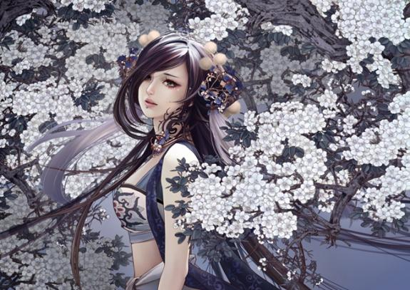

首页
日志
简历
书架
音乐
相册
联系方式
更换风格

沧海泪，巫山云，紫陌红尘的繁华沉醉中
清风舞明月，幽梦落花间
一曲琴韵瑟瑟，悲欢尘世离合
醉知酒浓，醒知梦空
红尘一梦醉千年，寂寞一世歌相伴
沧海泪，巫山云，紫陌红尘的繁华沉醉中
清风舞明月，幽梦落花间
一曲琴韵瑟瑟，悲欢尘世离合
醉知酒浓，醒知梦空
无需匆忙，不要将就，缘分到了，就一定会在一起
爱情不是寻找共同点，而是学会尊重不同点。
世上最凄绝的距离是两个人本来距离很远，互不相识，忽然有一天，他们相识，相爱，距离变得很近。
有的时候，你选择放手并不是无法坚持，只是因为你发现有些事情注定无法实现。
人不必太美，只要有人深爱；人不必太富，只要过得温暖。学会知足，学会淡泊，就是幸福！一生之中有个爱你的人，理解你的人，包容你的人，牵挂你的人，你就是最幸福的人。
不要等我变了以后，才说怀念以前的我。
猫喜欢吃鱼，可猫不会游泳；鱼喜欢吃蚯蚓，可鱼又不能上岸。上帝给了你很多誘惑，却不让你轻易得到。但是，总不能流血就喊痛，怕黑就开灯，想念就联系，疲惫就放空，孤立就讨好，脆弱就想家... ...
可笑的是，我们在朋友面前假装心理专家，可连自己的问题都解决不了。
对付虚伪的人，不是骂他拆穿他，而是让他继续悲哀地虚伪着，然后装作什么也不知道。那么慢慢地，很多人会主动跑来告诉你他有多虚伪。 感觉累的时候，也许你正处于人生的上坡路。坚持走下去，你就会发现到达了人生的另一个高度。
每次想找个人陪的时候，就发现有的人不能找，有的人不该找，还有的人找不到。
一个人生活虽然很难，但也必须学会一个人，不要轻易依赖别人。这是为了防止你身边的人都离开的时候，你还可以好好活下去。
总有那么一天，有一个人，会走进你的生活，让你明白，为什么你和其他人都没有结果。
酒，不喝不醉；人，不累不睡；心，不伤不碎；情，不学不会。万人追，不如一人疼；万人宠，不如一人懂。感情的事没有谁错谁对，只有谁不理解谁；人与人之间没有谁离不开谁，只有谁会不会珍惜谁。
无需匆忙，不要将就，缘分到了，就一定会在一起。
我在左手无名指上轻轻画了一个戒指，想着那么一天，可以不再是一个人负担自己的喜和悲。
再好的东西也有失去的一天；再深的记忆也有淡忘的一天；再爱的人，也有走远的一天；再美的梦也有苏醒的一天。缘分就像一本书，翻的不经意会错过童话，读得太认真又会流干眼泪。
一个人，如果没有经受过投入和用力的痛楚，又怎么会明白决绝之后的海阔天空。
爱情里最重要的事，不是如何去爱别人，而是努力成全最好的自己。
人生就像蒲公英，看似自由，却身不由己。有些事，不是不在意，而是在意了又能怎样。人生没有如果，只有后果和结果。命运只有自己掌握，别人掌控不了。成熟了，就是用微笑来面对一切事情。
人生就是这样，遵循简单那么就不累，适度知足才会不悔。
有些人，一旦遇见，便是一眼万年；有些爱情，一旦开始，便覆水难收。
不必介怀别人说了什么，怎么评价你。你就是你，唯一的你、独特的你，无可替代。
你说我行，就算全天下的人都说我不行，我也不在乎
每个人心里都有一座大山，总想翻过这座山去看看山外的世界。但其实爬到山顶上，发现那边还是山，更高，更远。很多时候，我们都在翻一座座的山，想让自己走得更远。这就是心的旅程。
一些事，只能当记忆。一些人，只能做过客。我终究不能逃避那些记忆，忘不了那个人，换不了独角戏的角色。一年又一年的流逝，深思追忆，回首前程往事，思念的伤痕越陷越深。多年以前的熟悉，多年以后的今天，一切的一切早已烟消云散，你还是你，我还是我，一样的陌生人。
痛过，才知道如何保护自己；哭过，才知道心痛是什么感觉；傻过，才知道适时的坚持与放弃；爱过，才知道自己很脆弱。其实，生活并不需要这么多无谓的执着，没有什么真的不能割舍。
爱情的抉择有时候跟赌博没有两样，你可能赢，也可能输得一败涂地。你决定去还是不去的时候，要考虑的不是你将来会不会后悔，也不是他会不会永远爱你。因为你根本无法知道答案。最重要的，是你爱不爱他，是不是爱他爱到愿意豪赌这一铺，虽然你是个贫穷的赌徒。
凭你的智慧，我很难跟你解释。
忘记一段逝去的感情、忘记一个已经不爱你的人，那个过程，就像戒除毒瘾一样痛苦。毒瘾发作的时候，你痛苦得全身发抖、身体扭曲、五内翻腾，你恨不得一头撞向墙壁，你倒在地上挣扎，痛哭流涕，失去了做人的尊严。可是，谁叫你吸毒？凡事都有代价？开始的时候你就应该知道。
对强者而言，磨难犹如刀剑，使他愈见锋芒，不经过磨难的生活，日子未免过得乏味；不经过磨难的命运，人生便显得苍白。就生命而言，总是从平坦中获得的效益少，从磨难中获得的教益深。
毕业是个残忍的季节，成熟不成熟的都要一同收割；珍惜手边的幸福，不要等到失去后才悔不当初；不要动不动就许下承诺；请继续保持野心，有野心理想不一定实现，但有野心你才会前进，才会不堕落；要时刻记得感恩于在人生路上帮助过你的人。20多岁的你，试着去习惯这些，记住看的开一些，伤就会少一点。
或许是上帝的安排，在最终找到知音之前，我们总要遇到一些不尽如意的人，只有这样，我们才能对知音这份礼物充满感激之情。
爱情还没有来到，日子是无忧无虑的；最痛苦的，也不过是测验和考试。当时觉得很大压力，后来回望，不过是多么的微小。缘起缘灭，缘浓缘淡，不是我们能够控制的。我们能做到的，是在因缘际会的时侯好好的珍惜那短暂的时光。曾经相遇，总胜过从未碰头。 当时间过去，我们忘记了我们曾经义无反顾地爱过一个人，忘记了他的温柔，忘记了他为我做的一切。我对他再没有感觉，我不再爱他了。为甚么会这样？原来我们的爱情败给了岁月。为什么要那么痛苦地忘记一个人，时间自然会使你忘记。如果时间不可以让你忘记不应该记住的人，我们失去的岁月又有甚么意义？
只要你说我行，就算全天下的人都说我不行，我也不在乎。
要么忙着活， 要么忙着死，让你难过的事情，有一天，你一定会笑着说出来。这世界上只有一件东西深深的在你心底，他们摸不到，拿不走，那不是灰色的石头雕成的，那是希望！
世上并没有未完的故事，只有未死的死的心！ 有时候我们愿意原谅一个人，并不是我们真的愿意原谅他，而是我们不愿意失去他，不想失去他，唯有假装原谅他。不管你爱过多少人，不管你爱得多么痛苦或快乐，最后你不是学会了怎样恋爱，而是学会了怎样去爱自己！
曾经有机会目睹他最软弱或最糟糕的时刻，你仍然能够微笑接受他的不完美并且和他共同拥有这个秘密。这一段爱情才能够长久一些。
不要让已经永远没有可能回来的人成为你的负担，世上最无法掩饰的是你不爱一个人的时候的那种眼神。岁月，会让你知道一辈子的心愿真的只是一个心愿。爱情不是在泥土里开出的花朵，而是泥土里的肥料。最后开出的那朵花，是你的人生。
你遇上一个人，你爱他多一点，那么你始终会失去他。然后，你遇上另一个他爱你多一点，那么你早晚会离开他。直到一天你遇到一个人，你们彼此相爱。有一些爱情是注定没法走到终点的。一段爱情如果只有过去的回忆而没有现在的温暖和将来的快乐，那么我们为什么还要相互折磨呢？我不介意痛苦，但我起码应该得到与痛苦一样多的快乐。
不可否认我长得很丑，可是我很温柔，而且永远不会说谎 。
爱情本来就是寻找自己失落了的一部分，重新组合，从而找到了完整的填满。懒惰的人，是比较幸福的，他们不愿意努力去寻觅，自然也不会痛苦和失望。人生的过渡，当时百般艰难，一天蓦然回首，原来已经飞渡千山.是怎做得到的呢?却记不起来了。记忆是没得比较的，回忆里的味道是无法重寻的。
万物有时，离别有时，相爱有时。花开花落，有自己的时钟，鸟兽虫鱼，也有感应时间的功能。怀抱时，惜别有时，如果永远不肯忘记过去，如果一直恋恋不舍，那就是永远看不见晴空。
人在旋转木马上不断地旋转，眼前的景物交会而过，一幕一幕地消逝而去，又一再重现，流动也没有离别的痛苦。当某些特别的日子降临，呼唤着记忆甜美和沉痛的部分。人，还是会感到苍茫和孤单。有一些人，这辈子都不会在一起，但是有一种感觉却可以藏在心里，守一辈子。
离别和重逢，早不是我们难舍的话题。褥子上，繁花已开，开到茶蘼，到底来生还有我们的花季。今夜，星垂床畔，你就伴我漂过这最后一段水程，了却尘缘牵紧。我毫无理由地爱着另一个人，我仿佛知道他早晚会回来我身边。我祝愿他永远不要悲伤，我期望我们能用欢愉来迎接重逢。
在你曾经爱过我的那些短暂岁月里，我或许是世界上最幸福的人，只是那些日子已成过去，要留也留不住。爱情使人忘记时间，时间也使人忘记爱情。
倾我一生一世，换取岁月静好
喜欢一个人，每次遇见都像久别重逢。
彷徨，迷茫，然后跌打误撞是每个人都会经历的阶段，不知道该做什么，不知道自己到底有何价值。这个阶段把手头事做好的同时，可以广泛阅读也可以继续精进自己的专业，而后在某个时点突然顿悟，把自己推到一个全新的阶段。彷徨往往就是自己目前的储备，还没有满足自己的理想，而产生的无力。
宁愿花时间去修炼不完美的自己，也不要浪费时间去期待完美的别人。
每个人都会经历低潮，这个阶段的自己，什么都不想做，即便做了也什么都做不好，不如安静地等待，看书写字，锻炼身体，打扫房间，或是把列表里没时间看的电影看一遍，找靠谱的朋友聊天，一起回忆共同经历过的美好，忘记抱怨。那些在低潮时陪着你的人最珍贵，停滞时做的小事最动人。
有些失望是不可避免的，但大部分的失望，是因为你高估了自己。
你有没有发现，当你真的遇到很难的事情或者很伤的情感，你忽然就会变的不会说话了，甚至想硬挤几滴泪都挤不出来，屁大点事就瞬间看不开了。那种把自己死死的逼着，头痛心痛胃痛、各种痛，然后为难自己，不断自我设限的人，则会无止境的纠结。总之自己跟自己过不去的人，真的只能说：活该。善待自己！
遇到事情只会由着自己脾气吵架的，这是不懂事；吵架总要吵赢对方的，这是不懂爱；一个不开心随随便便闹分手的，这是既不懂事又不懂爱。
年龄从来不是界限，除非你自己拿来为难自己。愿你活出自己想要的人生， 无论何时，年华都盛开。
不论多牢固的感情都经不起冷落，所以别自以为是的挥霍。
倾我一生一世，换取岁月静好。如若岁月静好，我亦微笑，亦不老。时光会记得，那些始终如一，那些年华的静好，某些东西，深藏在心中，永远不会老去。
想一千次，不如去做一次。华丽的跌倒，胜过无谓的徘徊。
世界并不公平，男人步伐大，前行快。要想不被落后太远，女人只能更加辛苦。 责任中不放弃自我，付出时坚持成长。可以短暂地依靠他喘歇，却不能一劳永逸地靠着他安享。记得，一丈之内他是你的夫。落后太远，他便牵不到你的手。这是与子偕老的距离。
现在的我们害怕付出，害怕受伤，畏畏缩缩，犹犹豫豫，总想着要别人先付出让我看到他的真心才付出自己的感情，不料别人也是这么想的。 你是被你自己一步步击倒的，从你开始为自己的畏缩找借口的那天起，你已经开始慢慢变成被你看不起的样子。
世界上哪来的那么多一见如故，无话不谈，不过是因为那个人喜欢你，所以你说的话题他都感兴趣，你叫他听的歌他都觉得有意义，你说的电影他都觉得有深意，你口中的风景他都觉得好美丽。不过是因为他喜欢你。
有的时候，你选择放手并不是无法坚持，只是因为你发现有些事情注定无法实现。
我们的快乐，源于内心的真实，做最好的自己；我们的不幸，皆因浮躁着灵魂，攀比着他人。每个人都有长处，亦有软肋，艳羡别人的风光，追寻身外的幸福，尽属愚者之举。世间没有两片相同的树叶，你再不堪，也是独一无二，无须自轻自贱。生命之要义，要倾听自己心灵的声音，做个不雷同的人。
无论你怎么与他人控制距离，你依然会失去控制，因为这个世界上总有人能让你乖乖交心和伤心。
人生不过是一场旅行，你路过我，我路过你，然后，各自修行，各自向前。
你习惯晚睡，你喜欢发呆，你没什么坚持的动力，你也觉得很难做个开心的人，你无法忍受那样的自己，又深知没有能力改变。你别害怕也别试图强迫自己，世事无常，总该有一段日子是用来浪费，总要有无能为力的不愉快，让你短暂停留，在今后闪闪发亮的时候能感谢这些糟糕的日子。
唯有繁华落尽，生命的脉络才清晰可辨
等待，不是因为等那个人回来，是因为还有爱。
有的人，认真爱过一次以后就不敢再随便爱了，因为怕重蹈覆辙，怕感情的伤害，怕心灵变得更累。所以，我们都失去了深爱的能力。
唯有繁华落尽，生命的脉络才清晰可辨。
幸福，从没捷径，也没有完美无瑕，只有经营，只靠真心。
你能多快搞定自己的情绪，就能多快的得到成长。脾气会赶走运气。所以，那些貌似心大的人，不过就是能忍。在成为你想要成为的人之前，做好两件事：活着。忍着。
最好的时光在路上，最美的自己在远方。
我们当中没有一个人愿意相信，我们的痛苦都是由自己造成。我们都认为是这个世界亏欠了我们，使我们没有能得到幸福；在我们得不到幸福时，我们就把责任怪在最靠近我们的那个人身上。
现在才懂，原来一个人可以难过到，没有情绪，没有言语，没有表情。 书上说，刻意去找的东西，往往是找不到的。天下万物的来和去，都有它的时间。上帝很忙，每天要安排那么多人相遇，他没时间等你茁壮成长，也根本没心思听你的温言软语，那些出现在你生命里的人，抓住了，就是你的，自己放手了，也别可惜。他未来能给你更好的人，也能给你一辈子孤单。
生活的主题就是，面对复杂，保持欢喜。
给自己多一点疼爱，对生活多一点信心。只要今天比昨天好，就是前行路上最大的幸运。
飞蛾扑火时不见得不明白前面是火，其实后果如何都知道。人作死起来，都是无解的，非得死一次才行。很多事情你以为是为了他做的，其实你是为了自己。哪怕是死路，也要走。撞的鼻青脸肿才好，不然总觉得不甘心；看到是死路才愿意转弯，不然总觉得前头有希望。
有两种人本应该最值得珍惜，一种是能控制好情绪的女人，一种是有耐心哄你的男人。然而现实中，这两种人最容易被辜负。
累，有时候也是种享受，因为它让生活变得充实。
你过得快不快乐，只有你自己知道。其实谁都有一段不为人知的故事，其实谁都会脆弱的想要一个停靠，其实谁都想和某个人完成曾经诺言，其实谁都能微笑然后转身流泪，其实谁都的生活都多少有那点苦涩，经历风雨。我只想要少一点悲伤悲伤，多一点快乐。我只想要少一点孤独，多一点幸福。
有的看不惯，其实就是比不过。
美好的事物不会降临在傻傻等待的人身上，它只会降临在那些追逐目标和梦想的人身上。
最好的朋友往往是：逆境时能拉你一把，顺境时能损你一下。
运气决定在生命里你和谁相遇；内心决定在生命里你要谁停驻；然而时间，决定在生命里你同谁相伴一路。
总有一个人，让你无端端微笑。